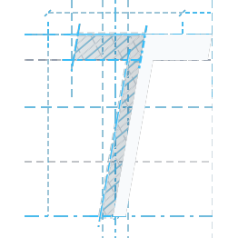

logo.psd ve favicon.psd dosyalarından şeffaf arka planla aktarıldı.
Kareli alan şeffaflığı gösterir. Logo zaten "techyr" içerdiği için yanına hiçbir metin eklenmemiştir.

favicon.psd dosyasındaki ikon kare kanvasa oran korumalı olarak yerleştirildi.
